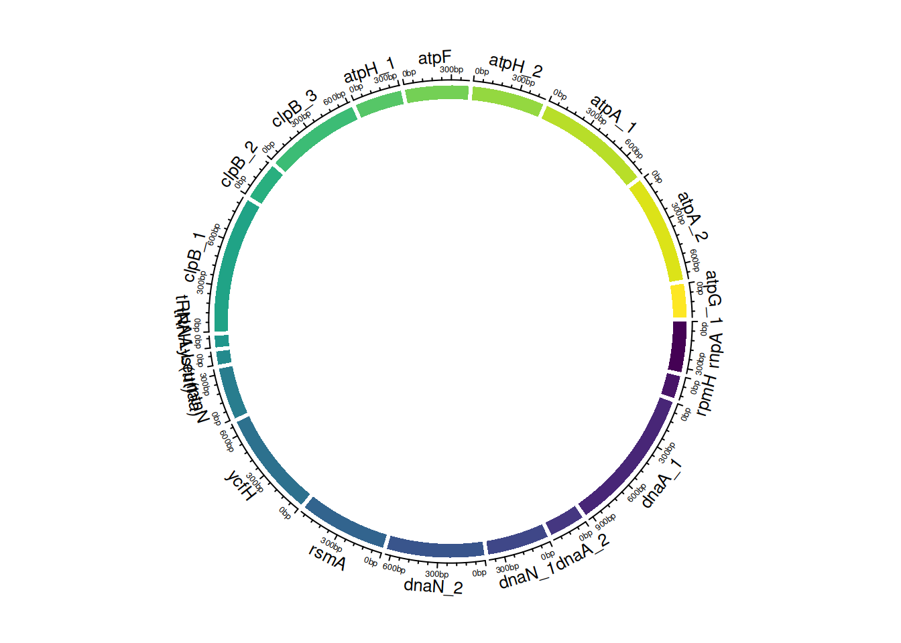

El consenso de genoma es un proceso fundamental en la bioinformática genómica que implica la generación de una secuencia de ADN representativa a partir de múltiples secuencias de lecturas de ADN. En los proyectos de secuenciación masiva de próxima generación (NGS), las secuencias de lecturas provienen de fragmentos de ADN secuenciados y suelen ser cortas y fragmentadas. El objetivo del consenso de genoma es reconstruir una secuencia de genoma completa y precisa a partir de estas lecturas.
Importancia del Consenso de Genoma
El consenso de genoma es esencial para una variedad de aplicaciones en genómica y biología molecular. Algunos de los usos más comunes incluyen:
Ensamblaje de Genomas: En proyectos de secuenciación de novo, donde no se dispone de una referencia genómica, el consenso de genoma se utiliza para ensamblar el genoma completo a partir de las secuencias de lecturas.
Variación Genómica: La identificación de variantes genómicas, como mutaciones o polimorfismos, se basa en comparaciones entre el genoma de referencia y las lecturas secuenciadas.
Análisis de Metagenómica: En estudios de metagenómica, donde se analiza el ADN de múltiples organismos en una muestra, el consenso de genoma permite identificar y caracterizar las especies presentes.
Estudios de Filogenia: La construcción de árboles filogenéticos y la comparación de genomas entre especies se basan en secuencias de consenso.
Proceso de Consenso de Genoma
El proceso de consenso de genoma implica la alineación y comparación de las secuencias de lecturas contra un genoma de referencia o entre ellas mismas. A medida que se realizan estas comparaciones, se determina la secuencia de consenso, que representa la secuencia de ADN más probable en las regiones cubiertas por las lecturas.
Herramientas y Bibliotecas
Para realizar el consenso de genoma, se utilizan herramientas y bibliotecas bioinformáticas especializadas, como Rsamtools, Samtools, Bioconductor y otras, que permiten el procesamiento eficiente de archivos de alineación (BAM/SAM) y la generación de secuencias de consenso de alta calidad.
El consenso de genoma es una parte esencial de la investigación en genómica y juega un papel crucial en la comprensión de la estructura y la función de los genomas. A medida que avanza la tecnología de secuenciación, las técnicas y las herramientas de consenso de genoma continúan evolucionando para abordar desafíos cada vez más complejos en la genómica.
Generación de consenso genómico
En esta sección, se genera un consenso genómico utilizando la biblioteca Rsamtools. Primero, se cuenta la posición de la alineación y se muestra un resumen:
Este código calcula un consenso genómico a partir de la alineación en el archivo BAM utilizando los parámetros especificados y lo almacena en un archivo FASTA en el directorio results/.
Tambien podemos ver este proceso en Linux usando el programa ivar:
En esta sección, aprenderás a realizar la anotación de genomas bacterianos utilizando la herramienta Prokka. Asegúrate de seguir los pasos detallados a continuación.
Paso 1: Instalación de Prokka
Antes de comenzar con la anotación, primero debemos instalar la herramienta Prokka. Si aún no lo has hecho, puedes encontrar instrucciones detalladas en el índice del curso.
Paso 2: Anotación con Prokka
Una vez que tengas Prokka instalado, puedes usar el siguiente comando para realizar la anotación de tu genoma bacteriano:
# Anotación de genomas bacterianosprokka--kingdom Bacteria --outdir annotation/ --centre X --compliant ref.fa
Este comando creará una carpeta llamada annotation/ donde podrás encontrar los diferentes formatos de anotación generados por Prokka.
Paso 3: Edición de los Datos de Anotación
Antes de trabajar con los datos de anotación, es importante realizar algunas ediciones. A continuación, se presentan los comandos necesarios:
# Retirar el encabezado del archivo GFFhead-n 2 PROKKA_10052023.gff > annotation.gff# Retirar las secuencias fasta no deseadas del archivo GFFfgrep"gnl|X|DKBIDJJK_1" PROKKA_10052023.gff |fgrep-v">gnl">> annotation.gffcut-d";"-f1 annotation.gff > annotation2.gff# Retirar el encabezado del archivo TSVhead-n 1 PROKKA_10052023.tsv |cut-f1,2,3,4> annotation.csv# Retirar las anotaciones del archivo TSVawk'{print $1"\t"$2"\t"$3"\t"$4}' PROKKA_10052023.tsv >> annotation.tsv
Paso 4: Procesamiento de Datos en R
Ahora que hemos preparado los datos, podemos cargarlos en R y realizar análisis adicionales. Asegúrate de tener las bibliotecas necesarias instaladas. Puedes ejecutar estos comandos en R:
The following object is masked from 'package:dplyr':
where
# Leer los datos de anotación desde un archivo GFFgfff<-read.gff("data/annotation/annotation2.gff")gfff$attributes<-gsub("ID=", "", gfff$attributes, fixed =TRUE)gfff$attributes<-gsub("_gene", "", gfff$attributes, fixed =TRUE)
# Leer los datos de anotación desde un archivo TSVdf<-read.table("data/annotation/annotation.tsv", sep ="\t", header =TRUE)df<-df%>%dplyr::filter(ftype%in%c("CDS", "rRNA", "tRNA"))
# Filtrar y procesar los datosgffCDS<-gfff%>%dplyr::filter(type%in%c("CDS", "rRNA", "tRNA"))tmp<-merge(x =df, y =gffCDS, by.y ="attributes", by.x ="locus_tag", all =TRUE)
# Contar el número de etiquetas de locus únicaslength(unique(tmp$locus_tag))
[1] 1143
# Filtrar y seleccionar las primeras 20 filas de genes no hipotéticosgenes_annot<-tmp%>%dplyr::filter(gene!="hypothetical")%>%head(20)colnames(genes_annot)<-c("locus", "ftype", "width", "gene", "seqid", "source", "type","start", "end", "score", "strand", "phase")
Paso 5: Visualización en Gráfico Circular
Finalmente, podemos visualizar los datos de anotación en un gráfico circular utilizando la biblioteca circlize. Ejecuta estos comandos en R:
========================================
circlize version 0.4.15
CRAN page: https://cran.r-project.org/package=circlize
Github page: https://github.com/jokergoo/circlize
Documentation: https://jokergoo.github.io/circlize_book/book/
If you use it in published research, please cite:
Gu, Z. circlize implements and enhances circular visualization
in R. Bioinformatics 2014.
This message can be suppressed by:
suppressPackageStartupMessages(library(circlize))
========================================
Attaching package: 'circlize'
The following object is masked from 'package:ape':
degree
# Crear un dataframe con los datos de anotacióndf<-data.frame( name =genes_annot$gene, start =genes_annot$start, end =genes_annot$end, tipo =genes_annot$ftype)# Inicializar el gráfico circularcircos.genomicInitialize(df)# Configurar una pista en el gráfico circularcircos.track( ylim =c(0, 1), # Rango de valores en el eje Y bg.col =viridis(20), # Colores de fondo de las regiones bg.border =NA, # Sin borde en las regiones track.height =0.05# Altura de la pista)

En resumen
En esta sección, hemos cargado las bibliotecas necesarias y creado un dataframe df con los datos de anotación. Luego, inicializamos el gráfico circular utilizando circos.genomicInitialize y configuramos una pista en el gráfico circular con circos.track.